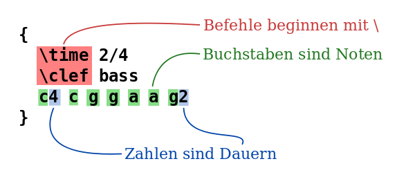
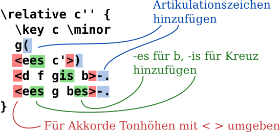
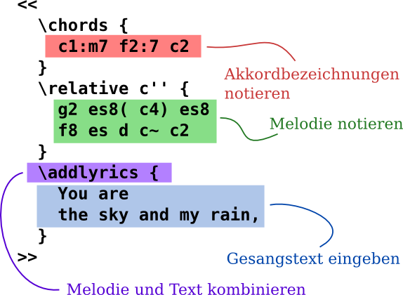
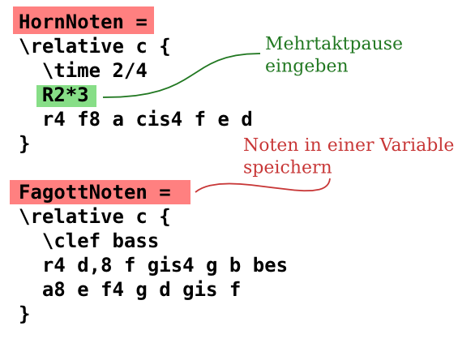
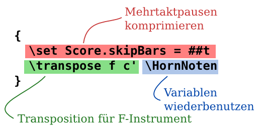
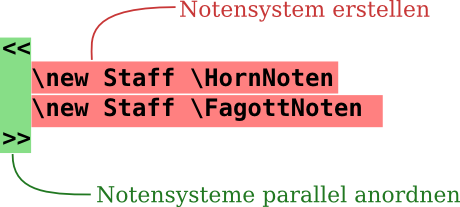

Texteingabe
Musik „kompilieren“

(Klick zum Vergrößern)
LilyPond ist ein kompiliertes System: es wird über eine Text-Datei gestartet, die die Noten beschreibt. Die resultierende Ausgabe wird am Bildschirm betrachtet oder ausgedruckt. In einer bestimmten Beziehung ist LilyPond eher eine Programmsprache als ein graphisches Notensatzprogramm.
Man schreibt die Noten nicht, indem man Notensymbole von einer graphischen Leiste zieht und auf einem sich dynamisch immer wieder erneuernden Notensystem platziert. Anstatt dessen schreibt man Text. Dieser Text wird von LilyPond interpretiert (oder „kompiliert“) und dabei schön aussehender Notensatz produziert.
Leute, die an das graphische Notensetzen gewöhnt sind, können eine Weile brauchen, um die neue Arbeitsweise zu lernen, aber das Resultat macht den Aufwand wett.
Achtung: Wir zeigen einen kurzen Überblick über unsere Texteingabe – es ist nicht so kompliziert, wie es sich anhört. Machen Sie sich keine Sorge, wenn Sie nicht jedes Detail der Beispiele verstehen. In unserer Dokumentation für Anfänger werden alle Einzelheiten sehr viel ausführlicher behandelt.
Es ist so einfach wie A B C
Noten werden durch Buchstaben und Zahlen kodiert. Besondere Kommandos werden mit einem Backslash eingegeben.


Versetzungszeichen werden durch verschiedene Endungen hinzugefügt: -is
nach der Note setzt ein Kreuz, -es dagegen ein b (– das sind die deutschen
Endungen, Endungen in anderen Sprachen sind auch möglich). LilyPond entscheidet selber, wo
es die Versetzungszeichen platziert.


Popmusik
Akkorde und Liedtext können einfach zu einem Lead Sheet kombiniert werden.


Orchesterstimmen
Die Eingabedatei enthält die Noten eines Stückes. Partitur und Stimmen können aus einer einzigen Eingabe-Datei erstellt werden. Wenn man eine Note verändert, findet sich die Veränderung also gleichzeitig in der Stimme und der Partitur wieder. Damit die Noten mehrfach verwendet werden, sollten sie einer Variablen zugewiesen werden:

Mit dieser Variable kann dann eine Einzelstimme erstellt werden (hier transponiert, die Pausen sind zusammengezogen):


Die gleiche Variable wird dann in der Partitur benutzt (hier in der Originaltonhöhe):


Dokumentation für Anfänger
Es ist uns klar, dass diese Art, Noten zu schreiben, vielen Benutzern seltsam vorkommt. Aus diesem Grund haben wir eine ausführliche Anleitung verfasst, die neuen Benutzern helfen soll. Man sollte mit der Einführung beginnen. Das Handbuch zum Lernen funktioniert als Einführung und Beginn für das Arbeiten mit LilyPond; hier werden viele Fragen beantwortet, bevor man sie überhaupt stellen konnte!
Bisweilen sind Meulinge von manchen Verhaltensweisen von LilyPond unnötig verwirrt. Bitte lesen Sie dieses Handbuch bevor Sie anzweifeln, daß LilyPond fehlerfrei arbeitet.
Weitere Information findet sich unter Handbücher
Der LilyPond Anwender Ben Lemon hat eine ganze Reihe von Video Tutorials in seinem Blog hinterlegt, die sich speziell an Neulinge wenden.
Einfachere Editionsumgebungen

(Klick zum Vergrößern)
LilyPond kümmert sich vor allem darum, Noten in bester Qualität zu setzen – das Programmieren einer graphischen Benutzeroberfläche (GUI) würde uns nur von dieser Aufgabe ablenken. Es gibt dennoch andere Projekte, deren Ziel es ist, LilyPond-Dateien zu erstellen.
Einige Editionsumgebungen beinhalten Syntaxhervorhebung, automatische Vervollständigung und vorgefertigte Vorlagen. Andere Programme stellen tatsächliche eine GUI zur Verfügung, mit der man graphisch eine Partitur editieren kann. Mehr Information finden Sie unter Leichteres Editieren.
Was jetzt?
Sie sind jetzt bereit, LilyPond herunterzuladen. Sind Sie immer noch nicht überzeugt? Lesen Sie Leichteres Editieren.